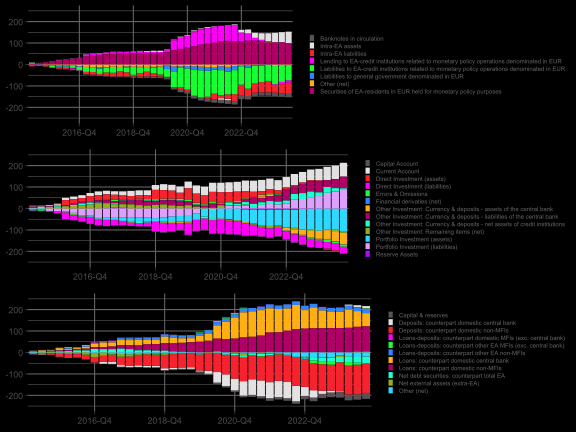

Liquidity Distribution AT
Liquidity Distribution [early draft]
Blablabla
From the beginning of 2015 until the end of 2018, reserves creation was mainly determined by the OeNB’s securities purchases, with refinancing operations playing a less prominent role. The newly created liquidity has been partly withdrawn form balance sheets of commercial banks by volatile changes in Target2-liabilities as well as a brief increase in banknotes in circulation.
With the outbreak of the pandemic, the OeNB started to activate its assets purchases again, but this time refinancing operations in form of TLTROs increased also considerably. Liquidity was withdrawn again by T2-liabilities and banknotes in circulation, but deposits which the Austrian government held at the OeNB played also an important role. Reserves thus increased less than the liquidity injecting operations would imply.
With the change in monetary policy and the expiration of TLTRO tranches, mechanisms started to change. The drop in TLTROS in the final quarter of 2022 led to a drop in reserves. However, afterwards reserves did not decrease significantly. This was the result of two compensating mechanisms. First, government deposits at the OeNB fell to a low level. Second, Intra-EA-claims show an incraesing trend leading to an increase in reserves, though increasing Intra-EA-liabilities partly compensated this development. The decline in monetary policy related securities has been very slow and did not significantly contribute to the evolution of reserves. Overall, these channels caused the banks’ reserves to fall less sharply than the isolated decline in liquidity-increasing positions would suggest.
On the balance of payments side, it can be seen that the pre-pandemic period was characterized by an inflow of funds from the cumulative current account surpluses. In terms of direct investment, there was a decline in both assets and liabilities, although the trend was characterized by volatility. As the balance of direct investment was balanced, this functional category had hardly any influence on payment flows. Portfolio investments on the liabilities side developed in a U-shape, with a decline followed by an increase. On the receivables side, however, portfolio investments show a consistently rising trend. This means that the development of the balance in this functional category has led to an outflow of cash. The OeNB’s liabilities in the form of deposits vis-à-vis other countries increased during this period, which reflects the increase in the Target2 liability. This also means that due to the transactions of the Austrian economy with other countries, more cash flowed out than in.
The pandemic period was initially characterized by stagnation in the current account balance, followed by an increase. Direct investment assets rose and the increase was somewhat stronger than that of direct investment liabilities. Portfolio investment also saw an increase in both assets and liabilities. These developments indicate that payments to other countries were higher than payments to the domestic market, which can also be seen in the development of the Target2 liability, but also in the banks’ net claims in the form of deposits.
The development of Target2 liabilities and the banks’ net deposit claims has visibly increased with the turnaround in monetary policy. At the same time, the increase in intra-eurozone claims is clearly visible on the OeNB side. There was also an inflow of cash and cash equivalents due to a sharp rise in the current account balance. Portfolio investments abroad rose visibly, but still lagged behind the increase in foreign portfolio investments at home.
The aggregated balance sheet of the banking sector shows an increase in reserves held at the oeNB on the assets side at the beginning of the period under review, with a simultaneous increase in net receivables from interest-bearing securities. However, the latter then fell from the end of 2017 until the outbreak of the pandemic. On the liabilities side, the development was mainly characterized by an increase in deposits from domestic non-financial sectors. It can also be seen that these deposits increased more strongly than loans to domestic non-financial sectors. It can therefore be deduced that deposits generated abroad have also flowed into the accounts of domestic non-financial sectors, for example through real economic transactions with other countries. Finally, it can also be seen that loans from domestic banks to non-financial sectors in the rest of the eurozone have increased more than deposits from these sectors at domestic banks.
In the banking sector, the pandemic period was characterized by an increase in lending to domestic non-financial sectors. In contrast to the previous period, loans developed at a similar rate to deposits from these sectors. On the assets and liabilities side, the operations of the OeNB and the Eurosystem were reflected in an increase in reserves and credit lines to the OeNB on the liabilities side.
With the turnaround in monetary policy, loans then stagnated and deposits hardly increased at all. This period was characterized by the expiry of refinancing operations. On the assets side, reserves fell, but to a lesser extent than the decline in credit lines would suggest. One significant development in this period is the relatively sharp decline in net receivables from interest-bearing securities.